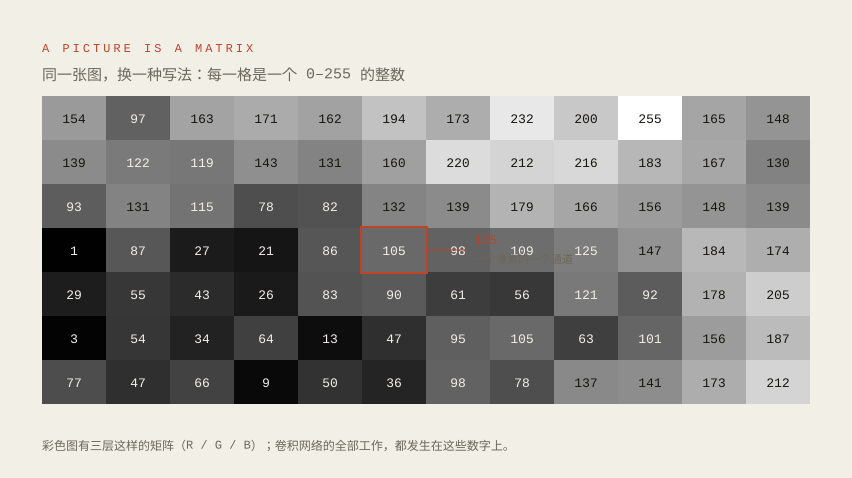

02 — 观看
机器看见的数字
相机把光变成电，把电变成整数。一张 1200×800 的照片，是两百八十八万个 0 到 255 之间的数字。算法并不真的在看照片，它读的是这些数字。
关掉灯，用手机拍一张照片。传感器上每一个小格子接收到的光子数量，被换算成一个整数： 越亮越大，最大 255，最小 0。彩色图有三层这样的格子，分别记录红、绿、蓝。
所以“一张图”在计算机内部，本质上只是一张数字表格。 所谓图像处理，就是在这些数字上做加减乘除。
1962 年，休伯尔和威泽尔把电极插进猫的视觉皮层，发现有些神经元只对特定方向的亮暗边缘放电。它们不关心那是一条树枝还是一条桌边，只对“这里有一条竖着的边”作出反应。

一块放大镜
3 × 3 的窗口
卷积核是一块 3×3 的小窗口。它滑过整张图，在每个位置做一次加权求和： 九个数乘以九个权重，加起来，变成输出图上的一个数。
把光标移到左边的图上，看取样窗里的九个数
层叠
层数越深，看见的越大
1989 年，杨立昆用几层卷积网络读手写邮编，错误率低到能直接上邮政流水线。 但直到 2012 年，同样的想法才真正用起来，因为在那之前算力不够把层数堆深。
层数越深，网络看到的东西越大：第一层找边缘，第二层找由边缘组成的纹理，第三层找纹理组成的部件，再往后，才有“这是一只猫”。每一层都没有被单独教过猫是什么，它们只是被同一个目标推动：把误差降下来。
下一间：从随机到秩序